One demonstration → one verified world → four robots
1The Chinese University of Hong Kong 2The Chinese University of Hong Kong, Shenzhen 3Nankai University 4The Hong Kong University of Science and Technology
Overview
Abstract
Large language model (LLM) coding agents can iteratively self-improve robot manipulation skills in simulation benchmarks, yet real-world tasks provide neither ground-truth success scorers nor resettable practice environments. Our key observation is that a single real demonstration simultaneously specifies scene geometry, defines the terminal success criterion, and serves as a physical reference trajectory for verifying world fidelity—all decoupled from the source robot's kinematics. We present RESET: we reconstruct a contact-rich world and derive a frozen read-only criterion from one demonstration (Rebuild); check that world against the demonstration by open-loop replay and silhouette consistency (Examine); evolve modular white-box task graphs and skill code from per-node failure evidence (Self-improve); deploy frozen code on real robots with zero runtime LLM calls (Execute); and share the verified world and criterion with unseen robots without new demonstrations (Transfer). On 8 manipulation tasks, each rebuilt from one real demonstration, RESET achieves 97% average success on unseen layouts in simulation, whereas zero-shot code reaches 27%, per-task fine-tuned π0.5 policies 31%, and Diffusion Policy 50%; injecting reconstruction defects shows that practice tolerates many reconstruction errors, that geometric errors can still stall or mislead it, and that the check flags most of them while physical randomization covers the rest. Without any target demonstrations, 3 heterogeneous robots acquire the same task skills in the shared world: a robot with similar arms copies 95% of its skill functions unchanged from the source robot, while robots with different arms and hands write their own. In real-robot experiments, the resulting programs run on 4 robots and succeed in 80% of 280 trials.
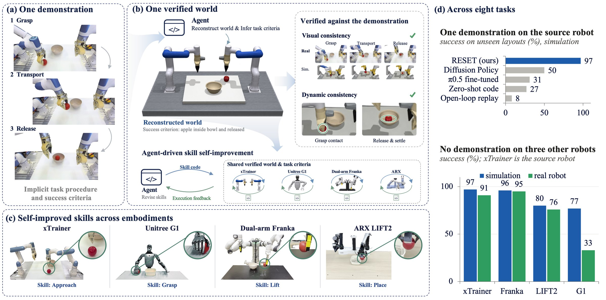
Method
The demonstration is used once, to build and check the world, and never as a motion to imitate.
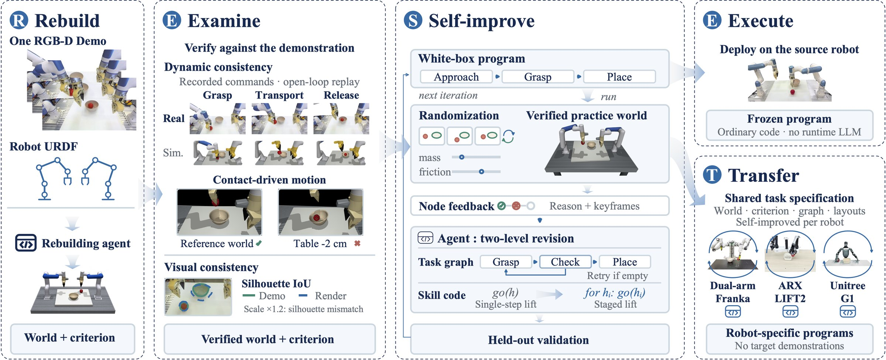
An agent reconstructs a contact-rich MuJoCo world from one RGB-D demonstration and the robot URDF, and reads the success criterion from the demonstrated final state. The criterion is frozen and hidden from the agent.
The recorded commands are replayed open-loop in the rebuilt world, and rendered silhouettes are compared with the demonstration. Objects are never attached to the gripper: they move only through contact.
A coding agent runs the white-box program on randomized layouts, reads which node failed and why, and revises the task graph or the skill code. A revision is kept only if it does better on held-out layouts.
The frozen program runs on the real robot as ordinary code: no LLM call at run time, no human intervention.
Other robots receive the same world, criterion and layouts, add their own URDF and calibration, and practice in the shared world. No demonstration on the target robot is needed.
Examine
The same recorded commands are replayed open-loop in three worlds. In the correct world the replayed grasp lifts the apple; with the table 2 cm too low or the objects 20% too large it does not, and the silhouettes no longer match.
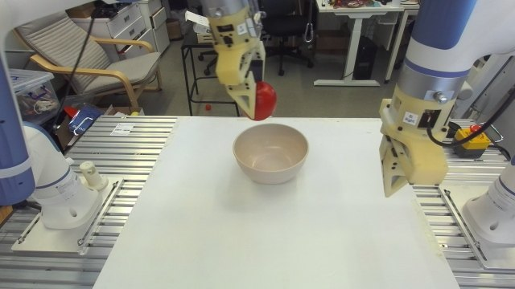
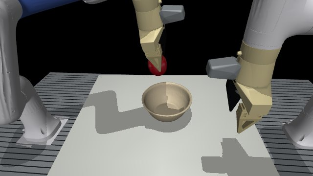
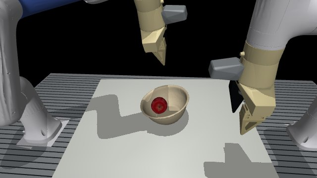
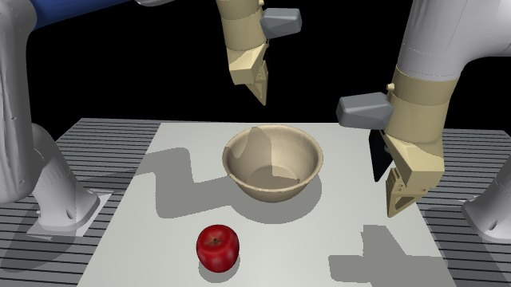
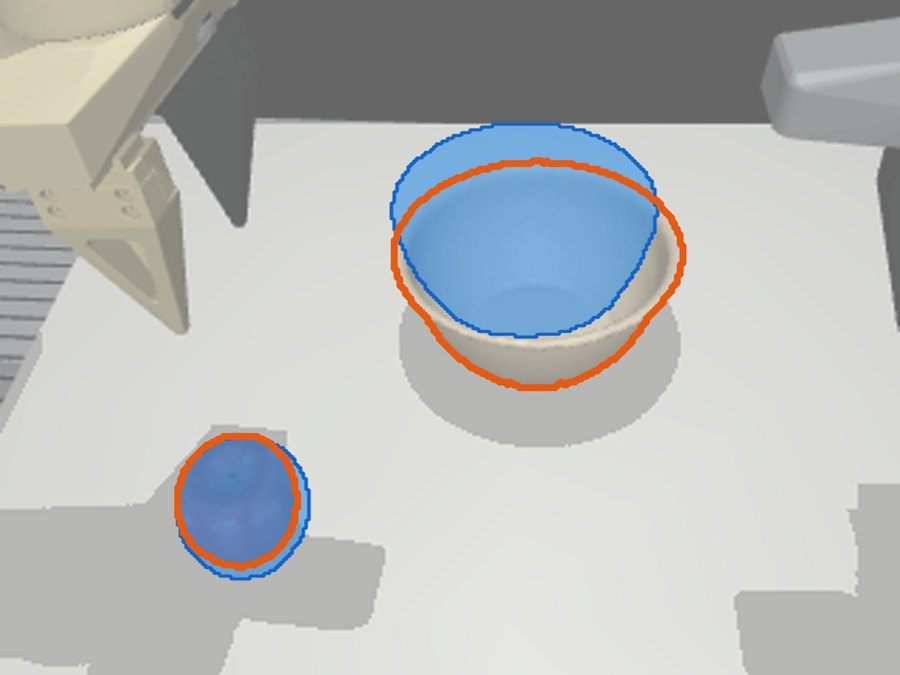
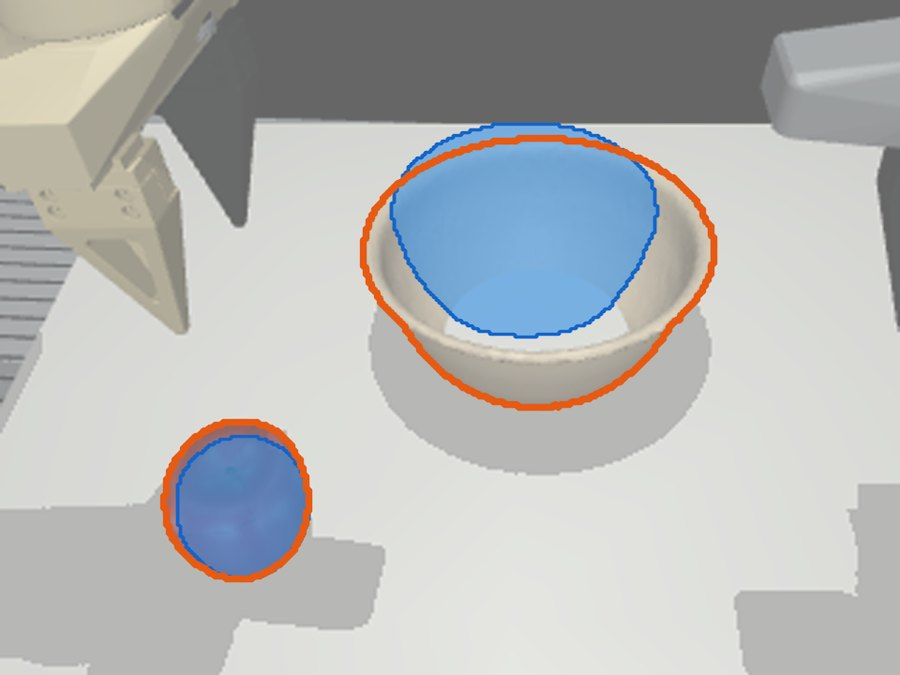
Mass and friction cannot be read from one demonstration; they are randomized during practice instead.
Self-improve
One real round on the Apple task: the agent sees which node failed and why, edits the program, and the revision is kept only if it does better on held-out layouts.
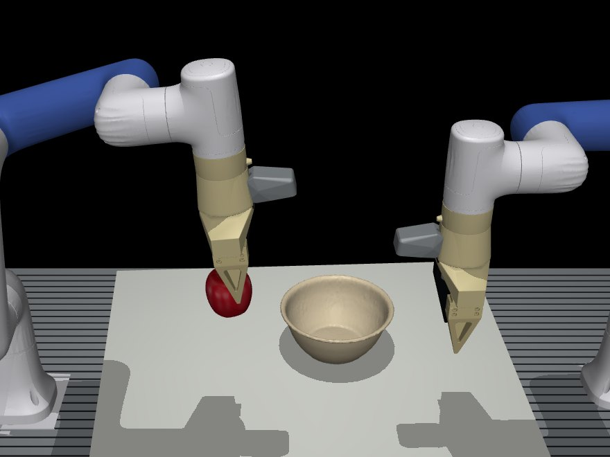
Failure record
move_fail arm=left
IK did not converge
Revision by the agent
- self.go(arm, np.r_[cur[:2], h], R, … + for hh in (h, h - .04, h - .07, …): + self.go(arm, np.r_[cur[:2], hh], …
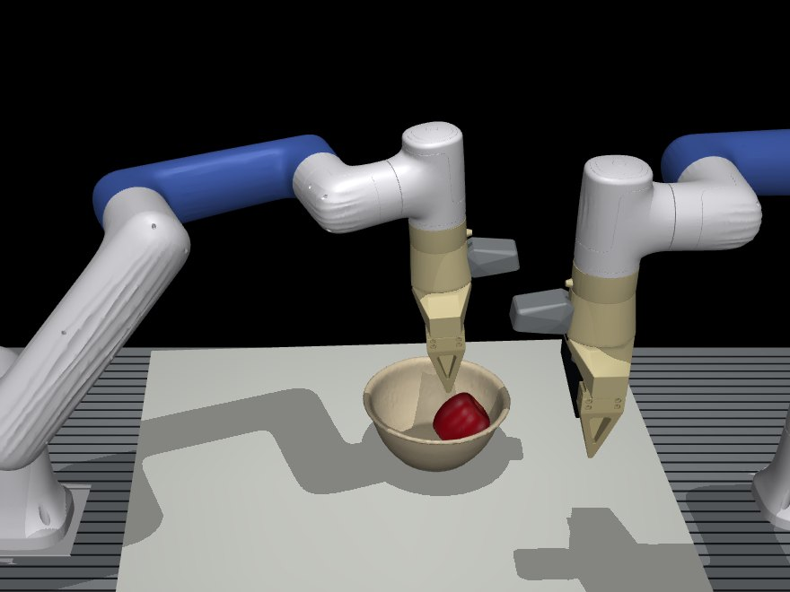
Self-improve converges in 2–8 rounds and 100–320 simulated episodes per task and robot.
Results
Mean over 8 tasks and 50 unseen test layouts each, in simulation, on the source robot. Both learned policies are trained on the same 100 RESET rollouts per task.
Practicing in a world with an injected error still yields, in most cases, a skill that works in the correct world. A geometric error hurts when it hides a failure during practice; Examine flags most such worlds.
Run unchanged, the source robot's programs work on 5 of 8 tasks on Dual-arm Franka, on no task on ARX LIFT2, and only on Apple on Unitree G1. After practice in the shared world: 96%, 80% and 77%.
Replaying each real trial's layout in the verified world gives the same outcome as the real robot in 95% of trials on xTrainer and 90% on ARX LIFT2.
Real robots
No code edits, no human intervention, no LLM call at run time. Objects are placed by hand at varied positions; 10 trials per task. Videos are sped up (motion speed shown in each clip).
Dual 6-DoF arms, parallel grippers · Source robot: one demonstration per task
Dual 7-DoF arms, parallel grippers · No demonstration
6-DoF arms on a lift, parallel grippers · No demonstration
Humanoid, five-finger hands · No demonstration; 4 tasks run on the real robot
In total 223 of 280 real-robot trials succeed (80%); 210 of 240 (88%) on the three fixed-base robots.
Simulation
Left: the single real demonstration and its open-loop replay in the rebuilt world. Right: each robot's final program in that world, with its success rate over 50 unseen test layouts. Clips play sped up.
Apple. Put the apple into the bowl.
Cubes. Put all five blocks into the bowl.
Stack Cups. Nest the purple cup in the blue cup.
Build Tower. Purple cube on the purple bar, yellow cube on top.
Mug-Box. Put the mug upright on the wooden box.
Open Drawer. Open the drawer and put the orange block inside.
Sweep. Sweep the block into the dustpan with the brush.
Lift-Box. Stand the juice carton upright on the wooden box.
Cross-embodiment
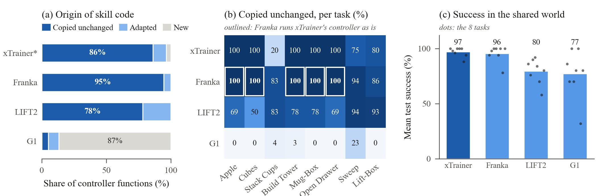
All results
Sim.: success rate over 50 unseen test layouts. Real: successes / trials of the same frozen program on the real robot (–: not run).
| Robot | Apple | Cubes | Stack Cups | Build Tower | Mug-Box | Open Drawer | Sweep | Lift-Box | Mean | |
|---|---|---|---|---|---|---|---|---|---|---|
| xTrainer | Sim. | 100% | 98% | 96% | 100% | 100% | 100% | 88% | 94% | 97% |
| Real | 10/10 | 10/10 | 9/10 | 8/10 | 10/10 | 10/10 | 6/10 | 10/10 | 73/80 | |
| Dual-arm Franka | Sim. | 94% | 98% | 100% | 100% | 94% | 100% | 78% | 100% | 96% |
| Real | 10/10 | 10/10 | 10/10 | 10/10 | 10/10 | 8/10 | 8/10 | 10/10 | 76/80 | |
| ARX LIFT2 | Sim. | 86% | 76% | 90% | 92% | 84% | 70% | 58% | 80% | 80% |
| Real | 7/10 | 8/10 | 9/10 | 7/10 | 9/10 | 9/10 | 6/10 | 6/10 | 61/80 | |
| Unitree G1 | Sim. | 86% | 70% | 100% | 70% | 80% | 100% | 32% | 80% | 77% |
| Real | 5/10 | 2/10 | 3/10 | – | 3/10 | – | – | – | 13/40 |
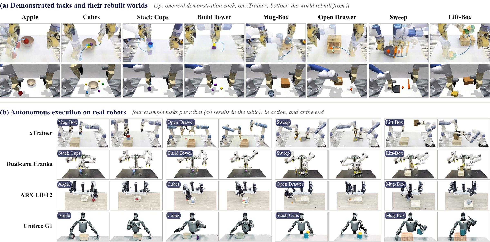
Citation
@article{sun2026reset,
title = {RESET: One Demonstration, One Verified World, Self-Improved Skills Across Embodiments},
author = {Sun, Zheng and Li, Zhuo and Li, Zhihao and Sim, Heng Yi and Wang, Ge and Zhu, Ziyue and Jia, Mingkai and Chen, Fei},
journal = {arXiv preprint},
year = {2026}
}